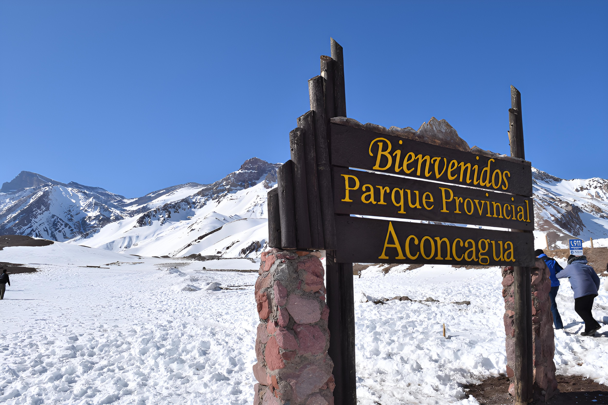

Aconcagua: el gigante de América
El Aconcagua es mucho más que una montaña: es una experiencia que te conecta con lo inmenso de la naturaleza. Con sus 6.962 metros, es el pico más alto de América y una de las grandes metas de montañistas de todo el mundo. Pero incluso si no sos escalador, el Parque Provincial Aconcagua tiene senderos accesibles que te permiten disfrutar de paisajes que parecen de otro planeta.
Recorrer los miradores del parque es una aventura en sí misma. Desde el camino a Horcones, se puede ver el imponente cerro reflejándose en lagunas cristalinas, rodeado de colores que van del marrón al violeta. El aire puro, el silencio y la inmensidad del paisaje hacen que cada paso valga la pena.
Si te animás, podés llegar hasta el mirador de Plaza Francia, un punto icónico desde donde se aprecia la pared sur del Aconcagua. Es un trekking exigente, pero la vista final es impresionante. Y lo mejor de todo: no hace falta ser montañista profesional para vivir esta aventura, solo tener ganas de descubrir la montaña más alta del continente.
← Volver a Categorías